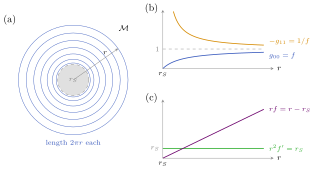

Appendix C • Examples
C.9 Example: the Schwarzschild metric (§10.2.2)
The vacuum Einstein equations of Subsection 10.2.2, checked on the Schwarzschild metric, where every component depends on one or two coordinates: the connection coefficients from the metric, the Ricci curvature from these, and the Newtonian limit fixing the one free constant (Figure C.19).
Manifold, chart and metric. Let \(r_S \coloneqq 2 G_N M\), with \(M > 0\), and \(\mathcal{M} \coloneqq \mathbb{R} \times (r_S, \infty) \times S^2\), with \(S^2 \subset \mathbb{R}^3\) the unit sphere. The chart is given through its inverse, \[ \mathscr{X}^{-1}(t, r, \theta, \varphi) = \big( t, \, r, \, (\sin\theta \cos\varphi, \, \sin\theta \sin\varphi, \, \cos\theta) \big), \] for \((t, r, \theta, \varphi) \in \mathbb{R} \times (r_S, \infty) \times (0, \pi) \times (0, 2\pi)\), so \(\alpha = (\alpha^0, \alpha^1, \alpha^2, \alpha^3) \eqqcolon (t, r, \theta, \varphi)\), and \(\mathcal{U}\) misses, on each sphere, the half great circle \(\varphi = 0\) through the poles. On \(\mathcal{U}\), \[ \big( g_{ij}(\alpha) \big) = \mathrm{diag}\Big( f(r), \; - \frac{1}{f(r)}, \; - r^2, \; - r^2 \sin^2\theta \Big), \qquad f(r) \coloneqq 1 - \frac{r_S}{r} , \] which extends to all of \(\mathcal{M}\), as the round metric of \(S^2\) does, and has signature \((+, -, -, -)\) since \(f > 0\) on \((r_S, \infty)\). As \(g(\partial x_0, \partial x_0) = f > 0\), \(\partial x_0\) fixes a time orientation. Only this chart is used, so its label is dropped, as in Subsection 10.2.2. By the remark on vacuum being Ricci-flat, \(G = 0\) if and only if \(\mathrm{Ric} = 0\). We keep \(f\) general until the end, and write \(' = d/dr\).
Volume element. \(\det g = - r^4 \sin^2\theta\), so \(\sqrt{- \det g} = r^2 \sin\theta\), independent of \(f\), and, by Subsection B.18.2, \(\Gamma^m_{nm} = \partial_n \ln (r^2 \sin\theta)\): \[ \Gamma^m_{1m} = \frac{2}{r}, \qquad \Gamma^m_{2m} = \cot\theta, \qquad \Gamma^m_{0m} = \Gamma^m_{3m} = 0 . \]
Connection coefficients. As \(g\) is diagonal, \(\Gamma^k_{ji} = \frac{1}{2} (g^{-1})^{kk} \big( \partial_i g_{kj} + \partial_j g_{ki} - \partial_k g_{ij} \big)\) (no sum over \(k\)), and \(g\) only depends on \(r\) and \(\theta\). Up to \(\Gamma^k_{ji} = \Gamma^k_{ij}\), the non-zero ones are \[ \Gamma^0_{01} = \frac{f'}{2f}, \quad \Gamma^1_{00} = \frac{f f'}{2}, \quad \Gamma^1_{11} = - \frac{f'}{2f}, \quad \Gamma^1_{22} = - r f, \quad \Gamma^1_{33} = - r f \sin^2\theta, \] \[ \Gamma^2_{12} = \Gamma^3_{13} = \frac{1}{r}, \quad \Gamma^2_{33} = - \sin\theta \cos\theta, \quad \Gamma^3_{23} = \cot\theta . \]
Ricci curvature. In the component formula of \(\mathrm{Ric}\) (dummy \(r\) renamed \(n\), as \(r\) is now a coordinate), the second term is \(\partial_b \Gamma^m_{am} = \partial_a \partial_b \ln(r^2 \sin\theta)\), by the volume element: \[ \mathrm{Ric}_{ab} = \partial_m \Gamma^m_{ab} - \partial_a \partial_b \ln(r^2 \sin\theta) + \Gamma^m_{nm} \, \Gamma^n_{ab} - \Gamma^m_{nb} \, \Gamma^n_{am} . \] Every non-zero \(\Gamma^k_{ji}\) carries the index \(0\) an even number of times, and so does every term above, its dummy indices counting twice: \(\mathrm{Ric}_{0b} = 0\) for \(b \neq 0\), and likewise for the index \(3\). The remaining off-diagonal component is \(\mathrm{Ric}_{12} = \Gamma^2_{12} \cot\theta - \Gamma^3_{32} \, \Gamma^3_{13} = \frac{\cot\theta}{r} - \frac{\cot\theta}{r} = 0\). On the diagonal, \begin{align*} \mathrm{Ric}_{00} &= \partial_1 \Gamma^1_{00} + \frac{2}{r} \, \Gamma^1_{00} - 2 \, \Gamma^0_{10} \, \Gamma^1_{00} = \Big( \frac{f f'}{2} \Big)' + \frac{f f'}{r} - \frac{f'^2}{2} = \frac{f}{2 r^2} \big( r^2 f' \big)' , \\ \mathrm{Ric}_{11} &= \partial_1 \Gamma^1_{11} + \frac{2}{r^2} + \frac{2}{r} \, \Gamma^1_{11} - \big( \Gamma^0_{01} \big)^2 - \big( \Gamma^1_{11} \big)^2 - \big( \Gamma^2_{12} \big)^2 - \big( \Gamma^3_{13} \big)^2 \\ &= - \Big( \frac{f'}{2f} \Big)' - \frac{f'}{r f} - \frac{f'^2}{2 f^2} = - \frac{1}{2 f r^2} \big( r^2 f' \big)' , \\ \mathrm{Ric}_{22} &= \partial_1 \Gamma^1_{22} + \frac{1}{\sin^2\theta} + \frac{2}{r} \, \Gamma^1_{22} - 2 \, \Gamma^1_{22} \, \Gamma^2_{21} - \big( \Gamma^3_{23} \big)^2 \\ &= - (r f)' + \frac{1}{\sin^2\theta} - \cot^2\theta = 1 - (r f)' , \\ \mathrm{Ric}_{33} &= \sin^2\theta \; \mathrm{Ric}_{22} \qquad \text{(same computation)} . \end{align*} Only two combinations of \(f\) appear: \((r^2 f')'\) in the \(t\) and \(r\) components, \((r f)'\) in the angular ones.
Einstein equations. For \(f = 1 - r_S / r\), \(r^2 f' = r_S\) is constant and \(r f = r - r_S\) has slope \(1\) (Figure C.19c), so every component vanishes: \(\mathrm{Ric} = 0\), hence \(G = 0\), and the Schwarzschild metric solves the vacuum Einstein equations. Conversely, among metrics of this form, \(\mathrm{Ric}_{22} = 0\) forces \((r f)' = 1\), i.e. \(f = 1 - c/r\) for a constant \(c\), which then also gives \((r^2 f')' = 0\). At large \(r\), \(g_{00} \approx 1 + 2 \Phi\) with the Newtonian potential \(\Phi = - G_N M / r\) of a mass \(M\) (Chapter 9) fixes \(c = 2 G_N M = r_S\).
What the coordinate \(r\) measures. On a sphere \(t, r = \text{const}\), the metric is \(r^2\) times that of \(S^2\): its area is \(4 \pi r^2\), and \(r\) is the radius obtained from it, not the distance from a centre, which \(\mathcal{M}\) does not contain. Along a radial segment \(t, \theta, \varphi = \text{const}\), \(r \in (r_1, r_2)\), the length is \(\int_{r_1}^{r_2} dr \, \sqrt{|g_{11}|} = \int_{r_1}^{r_2} dr / \sqrt{f} > r_2 - r_1\). For a short segment, the ratio of the two is about \(1 / \sqrt{f(r_1)}\), which diverges as \(r_1 \to r_S\) (although the length from \(r_S\) to any \(r_2\) stays finite): spheres at equal radial distances crowd together in \(r\) near \(r_S\) (Figure C.19a).
